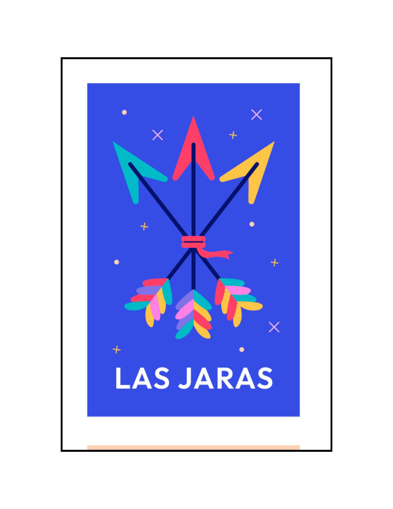

|

LAS JARAS
|
'En el campo brotan las jaras, con sus flores de mil colores'
its petals soft as faces, who whisper secrets of love. They dance in the wind with subtle grace, In a sea of bright green leaves, the sunlight embraces them in profile, where time stops in instants. Sweet fragrance in the air is felt, a song of life, peace and calm, rockroses are a symbol of the present, a refuge of dreams that caress the soul. Under the blue sky, her beauty shines, each flower a sigh, an eternal instant, In his presence, the heart trembles, like a soft fire, a tender glow. Thus, in the field, the rockroses bloom, always reminding us of the strength of being, In its colors, life rocks, a song to the earth, an eternal rebirth.